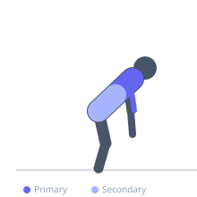

Exercise guide / Ring Muscle-Up with False Grip
Ring Muscle-Up with False Grip
A muscle-up on gymnastic rings using the false grip technique where the wrist is hooked over the ring. The false grip eliminates the need to regrip at the top of the movement, making the transition smoother. This is the foundational skill for ring gymnastics.
Primary muscles
latissimus dorsi
biceps brachii long head
Secondary muscles
rectus abdominis
transverse abdominis
Stabilizers
pectoralis major sternal
Equipment
Gymnastic Rings


Starting position
- Set up for Ring Muscle-Up with False Grip in proper position.
Setup
- Prepare body and equipment for Ring Muscle-Up with False Grip.
Steps
- Step 1: Hang from rings with false grip (wrist over ring, not under).
- Step 2: Pull rings explosively toward chest as if doing a row.
- Step 3: As rings reach chest, transition by leaning forward over rings.
- Step 4: Press to lockout in a dip to complete the muscle-up.
Coaching cues
- Maintain false grip throughout
- Lean aggressively forward in transition
Breathing
- Breathe steadily; never hold breath during static holds.
Range of motion
- Full range of motion with control at all times.
Tempo
- Controlled throughout; hold positions deliberately.
Common mistakes
- Losing false grip during transition
- Kipping without false grip
Safety
- Build prerequisite strength before attempting advanced variations.
- Stop if joint pain occurs.
Training
- strength: 1–5 reps
- hypertrophy: 5–10 reps
- strength: 3–5 sets
- hypertrophy: 3–4 sets
- Rest: {'strength': 180, 'hypertrophy': 120}